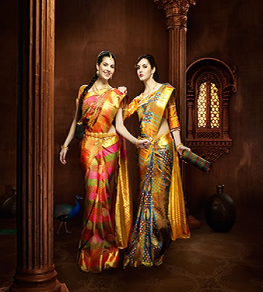
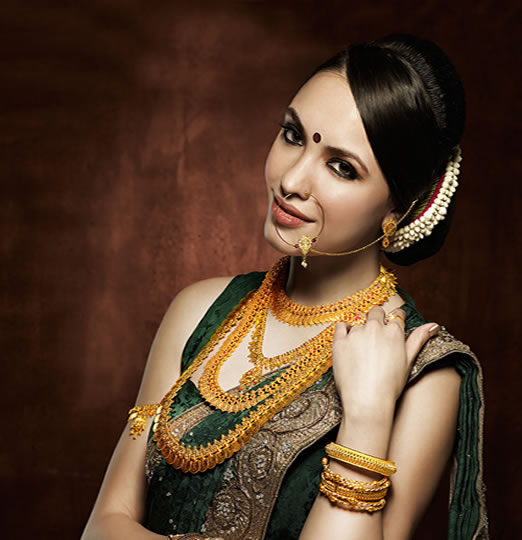
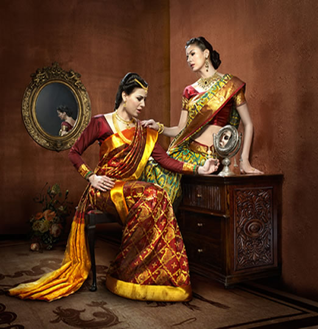
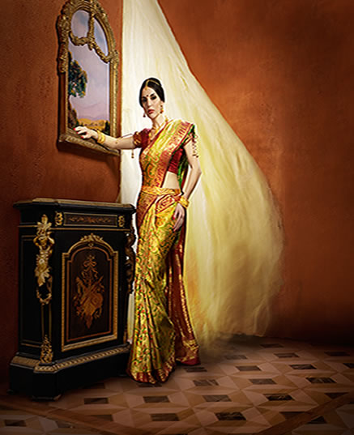
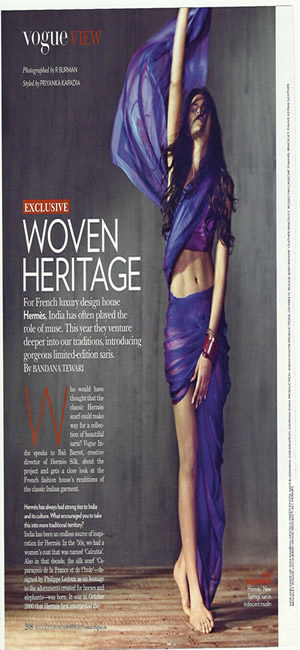

“Photo Shoot For SR Shop, Hyderabad Undertaken In February 2012”
   
Kalpana Shah’s Article in the I-Mint newspaper dated 24th December 2011
Also, log on to www.livemint.com for a slide show of her work & her brief interview. For more details click the following link"http://bit.ly/s3BxeA"Sari Draping For Vogue, November 2011 Issue” under the section “Vogue View” click the follwing link Vogue, November 2011
Kalpana’s project with WeddingSutra.com. Click on the below link to check out her work
http://www.weddingsutra.com/bride/best_friend.asp
Kalpana Shah’s Sari draping demonstration was organized by the Women Empowerment Committee of Indian Merchant Chambers at their Walchand Hirachand Hall premises on 31st October 2011